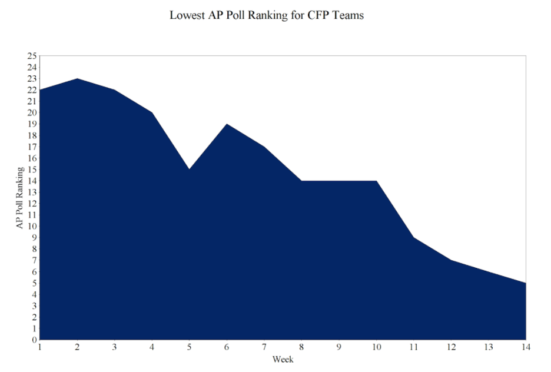
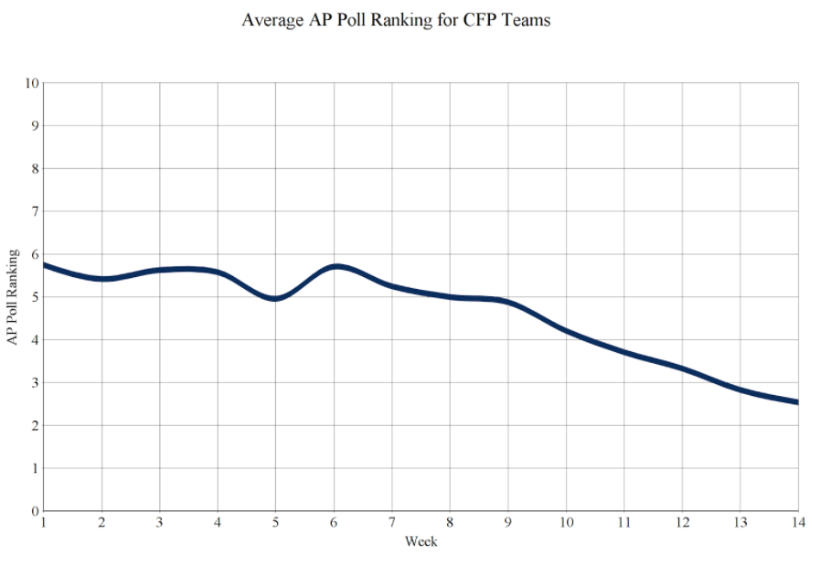

Will Your Team Make the CFP?
By Riley Henderson | November 29, 2020
Every Sunday from September to December, college football players, coaches, and fans alike await the weekly release of the AP Poll. Why? The AP Poll gives teams an indication of their ranking relative to the rest of the nation, one that has extreme consequences once bowl season rolls around. In particular, everyone wants to know if their team is on pace to make the all-important College Football Playoff, which is ultimately decided by a 13-member selection committee made up of former coaches and administrators. Given the 6 years of data we now have from 24 CFP semifinalists, I sought to quantify this pace. Essentially, I was curious whether weekly AP Poll standing could be used to predict eventual CFP selection based on historical data from CFP teams. First, I looked at the Preseason AP Poll Ranking of each of these 24 teams, and found that nearly 80% of them started the year in the top 7. Thus, in order to be confident that your team is in line with precedent, they should be in or around the top 10 in the preseason poll. And while 5 teams ranked outside the Preseason Top 10 have in fact gone on to qualify, no team outside the Preseason Top 20 has ever made the CFP. Make no mistake, if your team’s name doesn’t grace the Preseason AP Poll, they are clearly behind pace and it would take a truly unprecedented season to defy the odds.

Now we know where your team should be ranked coming into the season in order to keep pace with historical CFP precedent. But what about as the season unfolds? Looking at the graph below, you can see that not only does your team have to crack the Preseason AP Poll, but they have to do so in each of the following fourteen weeks as well. Drop out one week after that bad loss to that Sun Belt team or your conference minnow, and all CFP precedent is gone. Furthermore, you can see that the minimum ranking held out of these 24 teams each week decreases gradually from September to December, showing that your team doesn’t just need to maintain its mediocre position during this stretch, but instead needs to gain ground over the course of the season. Examining the graph, the lowest AP Poll ranking for CFP teams shrinks from #20 in Week 4, to #14 in Week 8, to #7 in Week 12.
Now that we have tracked the single lowest ranking per week out of 24 CFP teams, the question becomes, where have most of these semifinalists been ranked throughout the season? Well, if you calculate the mean AP Poll ranking, you’ll get a markedly different standard from that provided by the minimum AP Poll ranking. Consulting the graph below, you can see that the average hovers around #5 for the bulk of the season, before dipping in the final weeks leading up to CFP selection. So to really feel comfortable with your place from Week 1 to Week 10, your team should realistically occupy a position around #5, plus or minus a few spots.
In conclusion, we have seen that historical AP Poll data of CFP teams provides a pretty good benchmark for CFP potential. While progressive improvement from the preseason to the postseason is imperative, mean week-to-week changes are typically negligible until the last month of the season.
Ultimately, to have an outside chance based on precedent, your team should start in the top 20 and advance over time, with no absences from the AP Poll. On the contrary, to have a more realistic chance based on precedent, your team should start in the top 10 and spend most of the season around #5 in the country before your eventual selection.